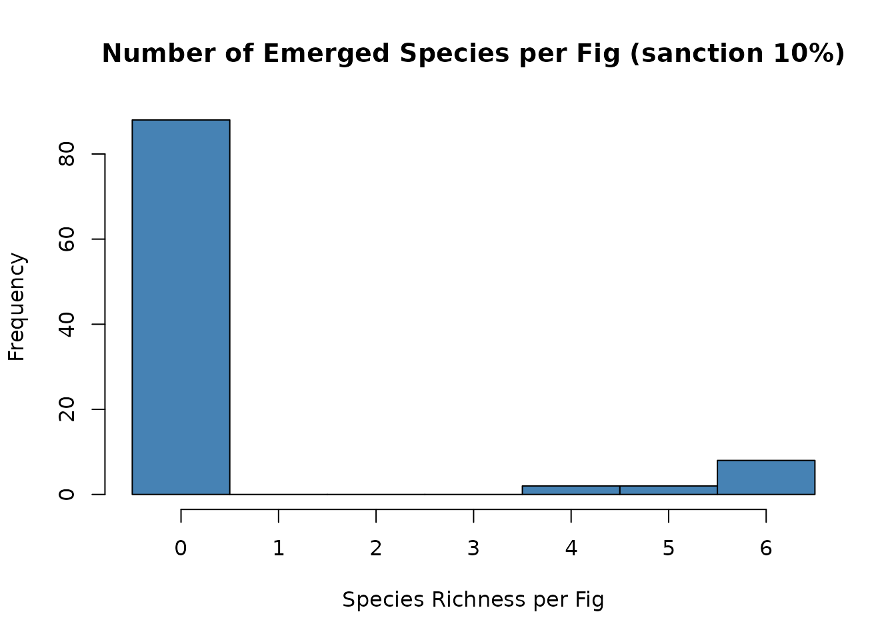
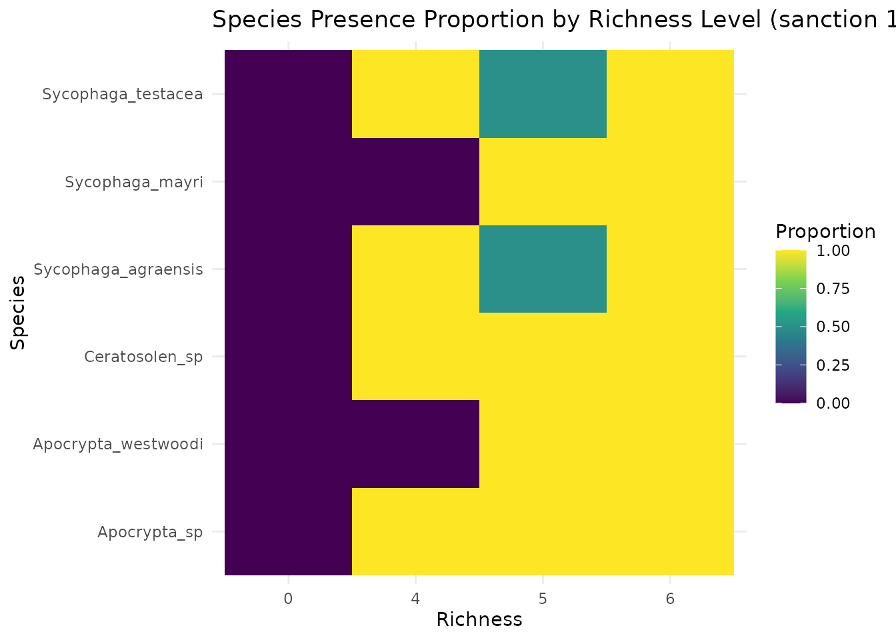

Alternative fig-retention rules
Source:vignettes/alternative-fig-retention-rules.Rmd
alternative-fig-retention-rules.Rmdalternative fig-retention rules: host-sanction and sink strength
Host-sanction threshold (extreme setting).
Here we illustrate an extreme host-sanction setting. We set the host-sanction threshold to 10% of a fig’s total flowers. If the number of ovules occupied by eggs of ovule-occupying guilds (pollinators + gallers) exceeds 10% of the fig’s flower count, the fig drops. When a fig drops, no fig wasps emerge. This example is for demonstration only; in practice, the threshold should be calibrated to empirical biology.
The recent nutrient sink strength hypothesis for fig abortion was also adopted in the simulation (Segar et al. 2025), and can be activated (use_sink_strength = TRUE). We quantified sink strength for each galler species, including pollinator and non-pollinator galler, because only galler species directly utilize flowers and other parasitoid wasps do not use flowers. To simplify the model, we assume that sink strength is the same for pollinating and non-pollinating gallers, and that the relationship between the number of galler wasps and sink strength is linear (sink_linear_coef, default = 1; this relationship is unlikely to be strictly linear in reality and can be adjusted as needed). For comparison, the sink strength contributions of gallers and seeds were weighted by two parameters to calculate total sink strength within a fig. The default weights for galler sink strength (sink_w_gall) and seed sink strength (sink_w_seed) are set to 1 and 1.5, respectively, following observation reported previously (Wang et al. 2014, Wang et al. 2020b). Then, when fig-level sink strength exceeds the allowable range (reflecting of nutrient and energy allocation in a fig), from sink_min_prop (default = 0.2) to sink_max_prop (default = 0.95), the fig is marked as aborted. Notes: (i) Parasitoid eggs are not counted toward the ovule-occupation total because they do not occupy ovules directly. (ii) If your function still uses the legacy argument name host_sanction, use it; otherwise use the corrected host_sanction_threshold. (iii) A new sink theory was incorporated into figsimR_0.2.0.tar.gz, more details: Simon T Segar, Sotiria Boutsi, Daniel Souto-Vilarós, Martin Volf, Derek W Dunn, Astrid Cruaud, Rodrigo A S Pereira, Jean-Yves Rasplus, Finn Kjellberg, The diversity of Ficus, Annals of Botany, 2025;, mcaf280, https://doi.org/10.1093/aob/mcaf280
load package and dataset
host-sanction
# First, ensure the sanction mechanism *enable_sanctions <- TRUE *
# Run the simulation with this specific sanction rule
# Key change: set a strict host-sanction threshold at 10% of total flowers
# If ovule-occupying eggs (pollinators + gallers) > 10% of flowers -> fig drops -> zero emergence.
# We mark figs as dropped but keep eggs/emergence for inspection (drop_cancels_emergence = FALSE).
# For analysis, we create a masked copy where dropped figs' emergence counts are zeroed.
# LHS over thousands of samples × 1000‑fig simulations is expensive. In the vignette we either (A) load a precomputed result, or (B) run a tiny demo search. For full runs, set `RUN_HEAVY <- TRUE` and increase `n_samples`, `n_draws`, `sample_n`, and `num_figs`.
RUN_HEAVY <- FALSE
sim_sanction_10 <- simulate_figwasp_community(
num_figs = if (RUN_HEAVY) 1000 else 100,
fecundity_mean = parameter_list_default$fecundity_mean,
fecundity_dispersion = parameter_list_default$fecundity_dispersion,
entry_mu = parameter_list_default$entry_mu,
entry_size = parameter_list_default$entry_size,
entry_priority = parameter_list_default$entry_priority,
species_roles = parameter_list_default$species_roles,
max_entry_table = parameter_list_default$max_entry_table,
enable_drop = TRUE,
drop_cancels_emergence = FALSE, # keep it as FALSE: it means "drop => zero emergence"
entry_distribution = "lognormal",
interaction_matrix = parameter_list_default$interaction_matrix,
interaction_weight = 0,
host_sanction = 0.1, # the key change, default = 0.8
egg_success_prob = parameter_list_default$egg_success_prob,
egg_success_prob_by_phase = parameter_list_default$egg_success_prob_by_phase,
layer_preference = parameter_list_default$layer_preference,
use_layering = TRUE, # let's turn it on
# new feature: sink metrics
use_sink_strength = FALSE, # disable sink strength
sink_w_gall = 1.0,
sink_w_seed = 1.5,
sink_linear_coef = 1.0,
sink_min_prop = 0.20,
sink_max_prop = 0.95,
seed = 43
)
sim_sanction_10 <- sim_sanction_10$summary
# Quick check: how many figs dropped, and confirm dropped figs have zero emergence
summarize_simulated_metrics(sim_sanction_10, species_list, version_label = "sanction 10%")$drop_summary 

#>
#> 0 1
#> 12 88nutrient sink strength hypothesis
In the output, the columns “is_dropped” and “drop_prob” are not meaningful. How to know if figs will be dropped? The columns “sink_below_min” and “sink_above_max” are logical: TRUE = drop; FALSE = no drop.
sim_sink_strength <- simulate_figwasp_community(
num_figs = if (RUN_HEAVY) 1000 else 100,
fecundity_mean = parameter_list_default$fecundity_mean,
fecundity_dispersion = parameter_list_default$fecundity_dispersion,
entry_mu = parameter_list_default$entry_mu,
entry_size = parameter_list_default$entry_size,
entry_priority = parameter_list_default$entry_priority,
species_roles = parameter_list_default$species_roles,
max_entry_table = parameter_list_default$max_entry_table,
enable_drop = FALSE,
drop_cancels_emergence = FALSE, # keep it as FALSE: it means "drop => zero emergence"
entry_distribution = "lognormal",
interaction_matrix = parameter_list_default$interaction_matrix,
interaction_weight = 0,
host_sanction = 0.1, # When enable_drop = FALSE, this sanction is disabled.
egg_success_prob = parameter_list_default$egg_success_prob,
egg_success_prob_by_phase = parameter_list_default$egg_success_prob_by_phase,
layer_preference = parameter_list_default$layer_preference,
use_layering = TRUE, # let's turn it on
# new feature: sink metrics
use_sink_strength = TRUE, # enable sink strength
sink_w_gall = 1.0,
sink_w_seed = 1.5,
sink_linear_coef = 1.0,
sink_min_prop = 0.20,
sink_max_prop = 0.95,
seed = 43
)
sim_sink_strength_comm <- sim_sink_strength$summary
head(sim_sink_strength_comm)
#> fig_id fig_diameter flower_count resource_use richness_skipped
#> 1 1 2.454983 1535 251 0
#> 2 2 1.300000 838 201 0
#> 3 3 1.916839 1437 722 0
#> 4 4 3.058223 2194 249 0
#> 5 5 1.415082 1106 430 0
#> 6 6 2.167081 1682 416 0
#> entry_Ceratosolen_sp eggs_Ceratosolen_sp entry_Sycophaga_mayri
#> 1 11 26 10
#> 2 6 55 7
#> 3 15 565 2
#> 4 2 85 3
#> 5 5 219 7
#> 6 7 195 6
#> eggs_Sycophaga_mayri entry_Sycophaga_testacea eggs_Sycophaga_testacea
#> 1 150 4 75
#> 2 136 1 10
#> 3 59 4 98
#> 4 14 5 150
#> 5 132 4 79
#> 6 66 8 155
#> entry_Apocrypta_sp eggs_Apocrypta_sp entry_Apocrypta_westwoodi
#> 1 12 20 7
#> 2 9 10 7
#> 3 7 16 7
#> 4 7 11 5
#> 5 9 2 4
#> 6 10 6 9
#> eggs_Apocrypta_westwoodi entry_Sycophaga_agraensis eggs_Sycophaga_agraensis
#> 1 6 0 0
#> 2 0 3 1
#> 3 29 3 3
#> 4 7 11 6
#> 5 12 6 14
#> 6 0 9 8
#> emergence_Ceratosolen_sp emergence_Sycophaga_mayri
#> 1 26 144
#> 2 54 136
#> 3 562 30
#> 4 79 7
#> 5 205 120
#> 6 187 66
#> emergence_Sycophaga_testacea emergence_Apocrypta_sp
#> 1 55 20
#> 2 0 10
#> 3 82 16
#> 4 139 11
#> 5 77 2
#> 6 149 6
#> emergence_Apocrypta_westwoodi emergence_Sycophaga_agraensis
#> 1 6 0
#> 2 0 1
#> 3 29 3
#> 4 7 6
#> 5 12 14
#> 6 0 8
#> unoccupied_flowers seeds failed_ovules used_flowers resource_ratio
#> 1 1284 1258 26 1535 0.1635179
#> 2 637 628 9 838 0.2398568
#> 3 715 701 14 1437 0.5024356
#> 4 1945 1908 37 2194 0.1134913
#> 5 676 661 15 1106 0.3887884
#> 6 1266 1241 25 1682 0.2473246
#> sink_strength sink_prop sink_below_min sink_above_max drop_prob is_dropped
#> 1 2138.0 0.9285559 FALSE FALSE 0 0
#> 2 1143.0 0.9093079 FALSE FALSE 0 0
#> 3 1773.5 0.8227789 FALSE FALSE 0 0
#> 4 3111.0 0.9453054 FALSE FALSE 0 0
#> 5 1421.5 0.8568415 FALSE FALSE 0 0
#> 6 2277.5 0.9026952 FALSE FALSE 0 0
#> entry_matrix
#> 1 11, 10, 4, 12, 7, 0
#> 2 6, 7, 1, 9, 7, 3
#> 3 15, 2, 4, 7, 7, 3
#> 4 2, 3, 5, 7, 5, 11
#> 5 5, 7, 4, 9, 4, 6
#> 6 7, 6, 8, 10, 9, 9
# how many figs are not marked?
sim_sink_strength_comm <- sim_sink_strength_comm[!(sim_sink_strength_comm$sink_below_min | sim_sink_strength_comm$sink_above_max), ]